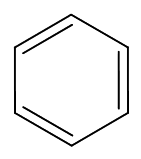
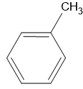
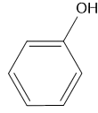
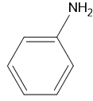
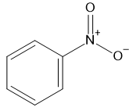
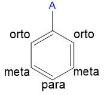
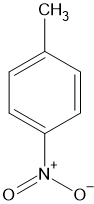

Witaj w temacie węglowodory aromatyczne
Czym są węglowodory aromatyczne (areny)?
Areny to takie substancje, które są bardzo komunistyczne ale o tym zaraz.
Wygląd:
Jak widać jest to cykloalken Czemu? Bo wiązania podwójne w tym związku(benzenie) to nie wiązania podwójne💀. To są wiązania tzw. zdelokalizowane, które najlepiej określa . Czemu? Bo każdy z węgli oddaje po jednym elektronie dla ogółu . Reszta wiązań jest normalna :D
Co to wiązanie zdelokalizowane?
Elektrony latają po pierścieniu. Co sprawia, że pierścień jest bardzo stabilny :D
Te wiązania to tak jakby "wiązania półtorejkrotne" oczywiście jest to niepoprawna nazwa.
Właściwości:
Skoro benzen przypomina zarówno alkany, jak i alkeny, czy odbarwi wodę bromową tak jak węglowodory nienasycone?
Nie
A może substytucja jak u alkanów?
Tak
C6H6(benzen) + Br2 → C6H5Br(bromobenzen) + HBr
Nazwy zwyczajowe
Podzielę się z wami zaskakująco dużą ilością (dokładniej 4) nazw zwyczajowych, które warto znać:
| Nazwa zwyczajowa | Nazwa systematyczna | Wzór szkieletowy |
|---|---|---|
| Toluen | Metylobenzen |  |
| Fenol | Hydroksybenzen |  |
| Anilina | Benzenoamina |  |
| Nitrobenzen | Nitrobenzen |  |
Orto, meta, para!
Co to? Jak postawimy zamiast A grupaf.html">grupę metylową to można nazwac np. związek:
To będzie paranitrotoulen. Dlatego, że znajduje się w odniesieniu para od grupa metylowej ze względu na to, że jest po przeciwnej stronie benzenu. W przypadku gdyby był jedno miejsce od grupa metylowej był by w odniesieniu orto i jak można sie domysleć 2 miejsca od grupa metylowej - meta.
Właściwości?
Czy wiecie, jaka substancja posiada niemal wszystkie oznaczenia zagrożeń chemicznych? Nie? To jak coś to benzen :D
Z innych właściwości:
- Mała reaktywność
- Silnie trujące
Mam nadzieję, że ta lekcja o arenach była interesująca! Pro Tip: Węglowodory aromatyczne wyglądają jak areny :D
Otrzymywanie:
Jedną z metod jest
Benzen i węże?
August Kekulé wymyślił strukture pierścienia benzenzenowego po śnie o wężu jedzącym własny ogon.
To tyle z tego tematu ale mam nadzieje że wam sie podoba(). Na dole macie następną lekcje. Pokój z